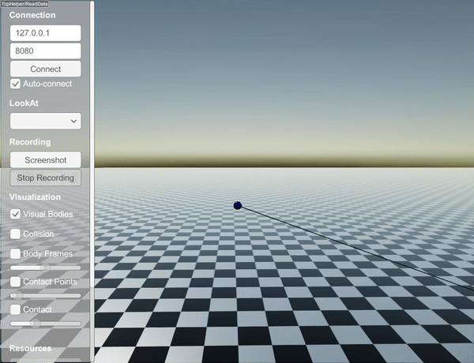

StiffLengthConstraint¶
StiffLengthConstraint is treated as a collision and solved using a contact solver.
This ensures that the constraint is respected with a high accuracy but it is computationally costly (as if there is one more collision).
StiffLengthConstraint can be added between two objects as
auto pin1 = world.addSphere(0.1, 0.8);
pin1->setPosition(0.0, 0.0, 3.0);
pin1->setBodyType(raisim::BodyType::STATIC);
auto ball1 = world.addSphere(0.15, 0.8, "steel");
ball1->setPosition(0.0, 0.1, 2.0);
auto wire = world.addStiffWire(pin1, 0, {0,0,0}, ball1, 0, {0,0,0}, 2.0);
By default, this constraint is STRETCH_RESISTANT_ONLY, which means that it acts like a string (i.e., it cannot push).
Above code will create dynamics shown below
The type can be changed with the following command
wire->setStretchType(raisim::LengthConstraint::StretchType::COMPRESSION_RESISTANT_ONLY);
By appending the above code and moving the ball higher, the simulation changes to
The following code
wire->setStretchType(raisim::LengthConstraint::StretchType::BOTH);
results in
This option resists both compression and stretch.